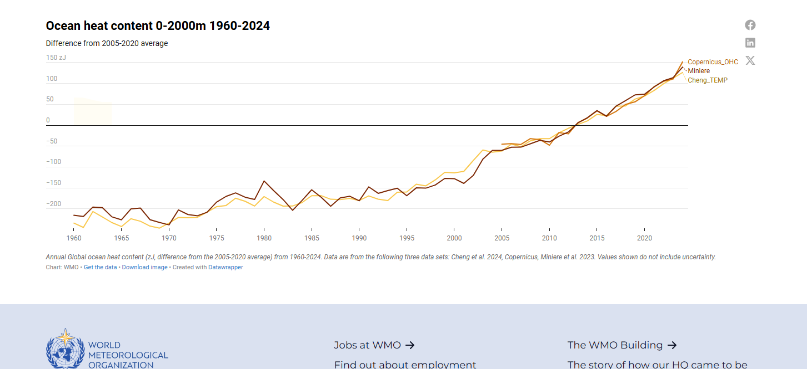

1.2. Temperatura y Nivel del mar
World Meteorological Organization
Ocean heat content 0–2000m (1960–2024)

Ver en WMO: wmo.int/resources/dashboards/ocean-heat-content-0-2000m-1960-2024
Our World in Data
Anomalías anuales de la temperatura de la superficie del mar (periodo preindustrial)
Fuente: OWID – Sea Surface Temperature Anomaly
Monthly average surface temperatures by year